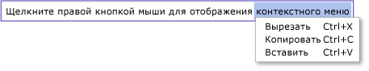

Общие сведения о TextBox
TextBox Класс позволяет отобразить или отредактировать неформатированный текст. Обычно используются TextBox редактирование неформатированного текста в форме. Например, форма запроса имени пользователя, номера телефона и т.д может использовать TextBox элементы управления для ввода текста. В данном разделе представлены TextBox класса и приводятся примеры его использования в оба Язык XAML и C#.
TextBox или RichTextBox?
Оба TextBox и RichTextBox позволяют пользователям вводить текст, но эти два элемента управления используются для разных сценариев. Объект TextBox требует меньше системных ресурсов то RichTextBox , это идеальный вариант, если необходимо изменить только обычный текст (т. е. для использования в форме). Объект RichTextBox подходит лучше, когда это необходимо для пользователю необходимо отредактировать форматированный текст, изображения, таблицы или другие поддерживаемые содержимого. Например, редактирование документа, статьи или блога, для которых требуется форматирование, изображений, и т.д., лучше всего выполнять с помощью RichTextBox. В следующей таблице перечислены основные возможности TextBox и TextBox.
| Элемент управления | Проверка орфографии в режиме реального времени | Контекстное меню | Форматирование команд как ToggleBold (CTRL + B) | FlowDocument содержимого, например изображения, абзацы, таблицы, и т.д. |
|---|---|---|---|---|
| TextBox | Да | Да | Нет | Нет. |
| RichTextBox | Да | Да | Да (см. раздел Общие сведения о RichTextBox) | Да (см. раздел Общие сведения о RichTextBox) |
Note
Несмотря на то что TextBox выполняет команды поддерживает форматирование редактирования, связанные с образом ToggleBold (CTRL + B), многие основные команды поддерживаются оба элемента управления, таких как MoveToLineEnd. Дополнительные сведения см. в разделе EditingCommands.
Возможности, поддерживаемые различными TextBox рассматриваются в следующих разделах. Дополнительные сведения о RichTextBox, см. в разделе Общие сведения о RichTextBox.
Проверка орфографии в режиме реального времени
Вы можете включить в режиме реального времени проверка орфографии в TextBox или RichTextBox. При включенной проверке орфографии все слова с ошибками подчеркиваются красной линией (см. рисунок ниже).

Чтобы научиться включать проверку правописания, см. раздел Включение проверки орфографии в элементе управления редактирования текста.
Контекстное меню
По умолчанию оба TextBox и RichTextBox имеют контекстное меню, которое появляется, когда пользователь щелкает правой кнопкой мыши внутри элемента управления. Контекстное меню дает пользователю возможность вырезания, копирования и вставки (см. рисунок ниже).

Можно создать собственное пользовательское контекстное меню, чтобы переопределить поведение по умолчанию. Дополнительные сведения см. в разделе Использование пользовательского контекстного меню с элементом TextBox.
Создание элементов TextBox
Объект TextBox может находиться на одной строке, высоты или нескольких строк. Одна строка TextBox лучше всего подходит для ввода небольшого объема обычного текста (т. е. "Имя", "Номер телефона" и т.д. в форме). Приведенный ниже показано, как создать одну строку TextBox.
<Page xmlns="http://schemas.microsoft.com/winfx/2006/xaml/presentation"
xmlns:x="http://schemas.microsoft.com/winfx/2006/xaml">
<StackPanel>
<TextBox Width="200" MaxLength="100" />
</StackPanel>
</Page>
Вы также можете создать TextBox , позволяющий пользователю вводить несколько строк текста. Например, если форма запрашивает биографические сведения пользователя, то целесообразно использовать TextBox , поддерживающий несколько строк текста. В следующем примере показано, как использовать Язык XAML для определения TextBox элемент управления, который автоматически расширяется, чтобы вместить несколько строк текста.
<TextBox
Name="tbMultiLine"
TextWrapping="Wrap"
AcceptsReturn="True"
VerticalScrollBarVisibility="Visible"
>
This TextBox will allow the user to enter multiple lines of text. When the RETURN key is pressed,
or when typed text reaches the edge of the text box, a new line is automatically inserted.
</TextBox>
Установка TextWrapping атрибут Wrap текст программы-оболочки в новую строку при границе TextBox будет достигнут элемент управления, автоматически расширяя TextBox элемента управления, чтобы появилось место для новой строки, в том случае, при необходимости.
Установка AcceptsReturn атрибут true приводит к новой строке должен быть вставлен при нажатии клавиши ВВОД, автоматически расширяя TextBox чтобы появилось место для новой строки, в том случае, при необходимости.
VerticalScrollBarVisibility Атрибут добавляет полосу прокрутки для TextBox, так что содержимое TextBox может прокручиваться до, если TextBox превышает размеры рамки или окна, который его окружает.
Дополнительные сведения о различных задачах, связанных с использованием TextBox, см. в разделе разделы руководства, посвященные.
Определение изменения содержимого
Обычно TextChanged событие должно использоваться, чтобы определить, когда текст в TextBox или RichTextBox изменяется, а не KeyDown как можно ожидать. Пример см. в разделе Определение изменения текста в TextBox.